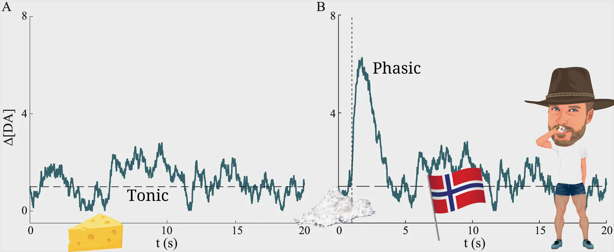
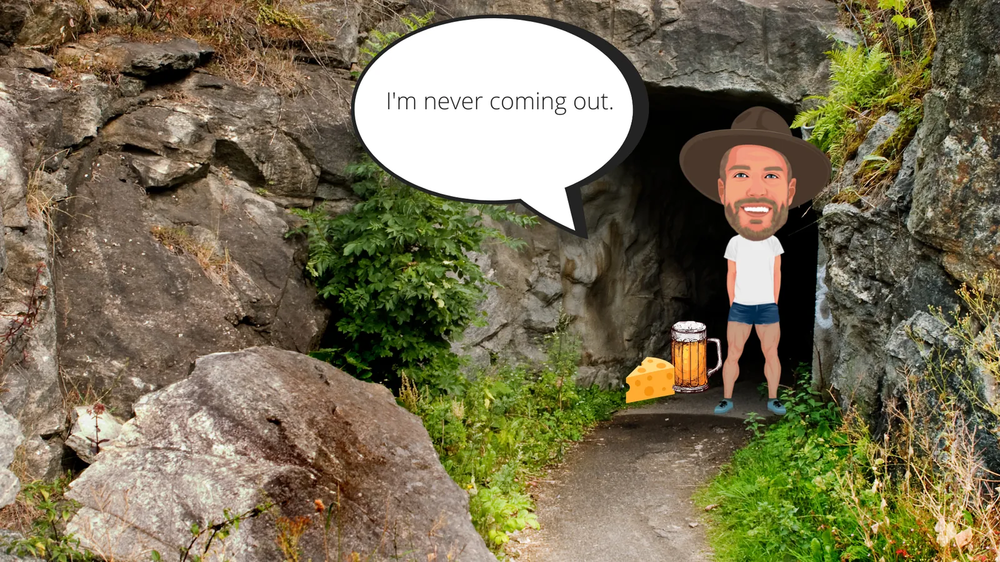
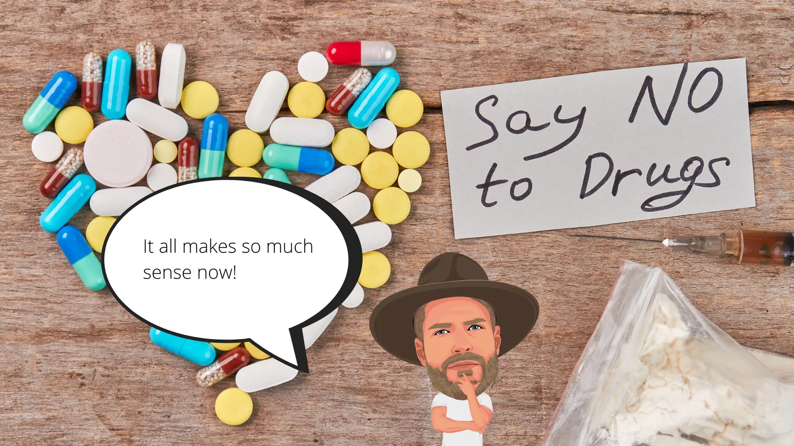
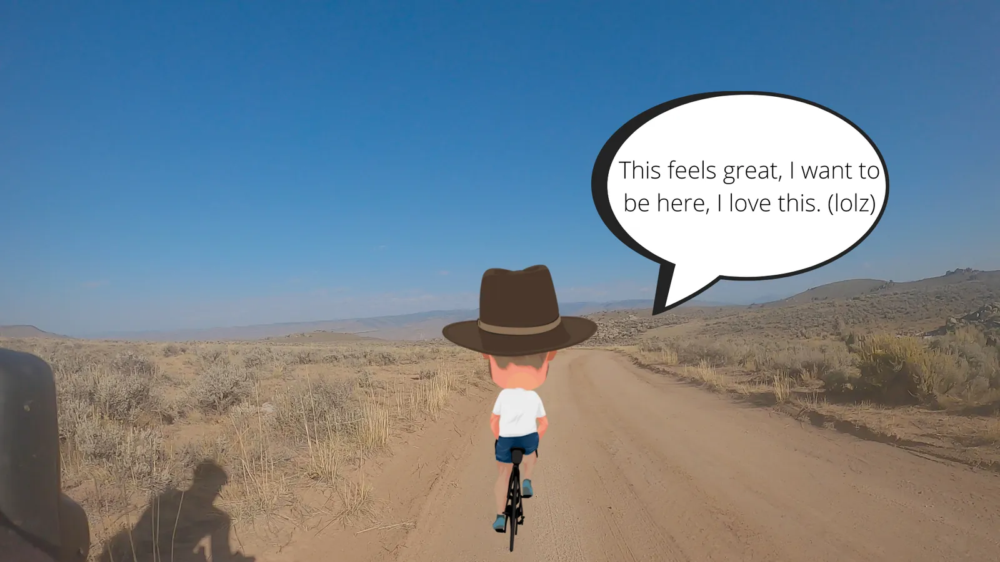
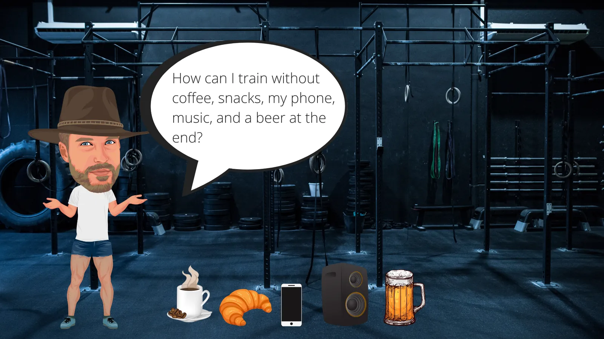
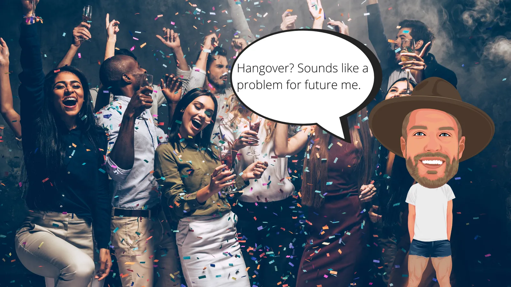
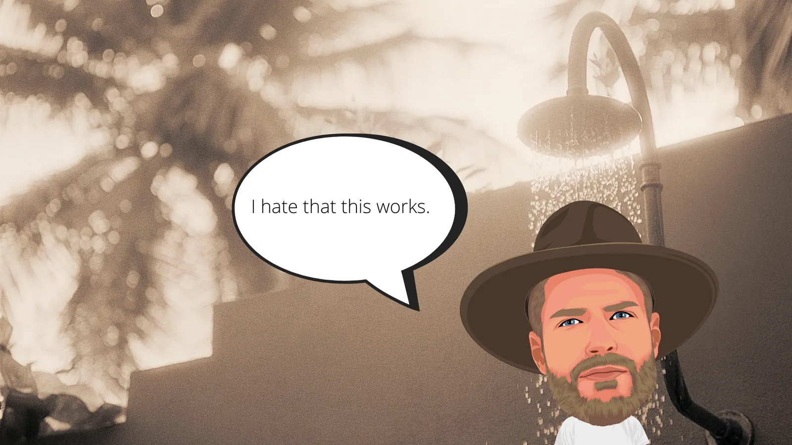

Dopamine is a neuromodulator, which means that it affects many neurons in your nervous system. Dopamine influences neural circuits involved in pleasure, motivation, craving, movement, and even your perception of time.
Dopamine works across two pathways in your brain – the mesocortical limbic pathway and the nigrostriatal pathway. The neuroscientist jargon here isn’t necessary; it’s just important to note that the mesocortical limbic pathway ends in your prefrontal cortex, which means that you’re conscious of it and can influence what triggers the release of dopamine by how you think about something.
Everyone has a genetically and behaviorally influenced baseline level of dopamine in their body – think of this as the available pool of dopamine. Some people have a lot; some people have a little – if you’ve ever known someone that seems unusually energetic and motivated (in the absence of dopamine boosting behaviors or substances), it’s probably because their available natural pool of dopamine is high.
The chart above, redrawn
Tonic and phasic dopamine release
A
B
Show the original chart (with Gravel God)

It’s misleading to talk about dopamine the way most people do in that if you do something pleasurable, you get a ‘dopamine hit’ because you always have dopamine in your system. Your baseline of dopamine is called your tonic release of dopamine. Dopamine hits occur when you do or ingest something that raises dopamine levels above your tonic dopamine level. The rub is that whenever you do something that increases dopamine above your tonic dopamine level, there is a corresponding drop in your dopamine below the baseline. What comes up must come down.

Why is that? Because the dopaminergic pathway is a deeply baked evolutionary neural circuit that helps us avoid stagnation. If you woke up 10,000 years ago and managed to get some food, you would feel good, but it wouldn’t allow you to feel good forever because you’d eventually eat all your food. Unless something motivated you to go out and search for more, you’d go hungry. What motivates you to go out and seek food again is the desire to raise dopamine levels back to baseline.
Understand that what determines whether something is pleasurable or not isn’t whether it’s intrinsically pleasurable, but how much more pleasurable it is compared to what you’re used to. You already know this because you’ve experienced it. For example, eat a bite of bread, then take a bite of a doughnut. Now, take a bite of the bread again. How does the bread taste? Less good than your initial bite, right? That’s because the bite of the doughnut releases more dopamine than the bread (because of the density of sugar and fat).
Remember the catch – what comes up must come down. After eating the doughnut, your dopamine levels won’t just return to baseline; they’ll go below the baseline, which induces craving. If there’s anything you should take away from the tonic, phasic dopamine relationship, it’s that the pursuit of higher and higher dopamine hits erodes your baseline level of dopamine and makes it harder for you to stay motivated and derive pleasure from everyday life. Consequently, it’s crucial to ensure that the ways you get dopamine serve rather than undermine your goals.
So what substances should you look out for? Here is a list of common dopamine-increasing substances/behaviors*:
- Caffeine – Not at all**
- Chocolate – 1.5x
- Sex – 2x
- Alcohol – 2x
- Nicotine – 2.5x
- Cocaine – 2.5x
- Amphetamine – 10x
- Exercise – not at all or 2x
*All values are multiples of your baseline e.g. 2x = twice your baseline dopamine level
**But it does increase the number of receptors that accept dopamine, so in a way, it enhances dopamine function.
The list above, as bars
Dopamine release as a multiple of your baseline

I don’t know about you, but two things jumped out at me from this list. First, holy buckets, I NEVER want to try amphetamines. I can’t imagine coming down after elevating my dopamine levels 10x above baseline. It sure gives me more sympathy for people struggling with addiction because after taking amphetamines for a long time, everything else in life would seem dull. But let’s not lose the more significant point here – be mindful of the peaks you chase because you don’t want to lose your ability to derive pleasure and motivation without big doses of dopamine.
The other thing that jumps out at me here is exercise. It doesn’t do anything for some people, and for others, it induces a similar bump in dopamine comparable to chocolate, sex, or alcohol. So what determines what releases dopamine for you?
Your conscious thoughts about it. Remember, dopamine acts on two pathways, one of which ends in your prefrontal cortex, the part of our brain partially responsible for consciousness. We have partial control over our dopamine release and can work to rewire our dopamine release to reward the actions that serve us the most. Yes, some substances and activities release dopamine predictably for everyone – but there’s also a subjective component to dopamine release that you can use to your advantage.
With that in mind, let’s dive into dopamine management strategies in order of importance.
1. Reward the friction of effort

The cheat code for using dopamine to your advantage in cycling (and in life!) is to rewire yourself to reward friction while in effort. To do this, when you’re training hard – think the last set over intervals or the last hour in a long ride – tell yourself:
“I’m doing this by choice, I like this feeling, and I love what I’m doing.” Yes, this is a lie – you might be in pain, you might want it to end, etc. – but you’re telling yourself a lie in the context of a truth. The truth is that you want the effort to feel easier. Well, guess what? If you get in the habit of telling yourself you enjoy effort when it’s hard, you’ll rewire yourself to release dopamine during exertion. Remember, dopamine release makes you feel good. If you release dopamine during intense effort, the effort will feel easier, you will love it, and you will choose to repeat the activity.
I’ll go dark to counter your cynicism. Do you know why people suffering from anorexia have such a hard time eating? Because they’ve consciously associated hunger with something they desire (despite the initial instinctual protests to eat), they get a release of dopamine when they feel hungry. Think about that – they’ve rewired their dopamine system to override the biological imperative to eat – is it a stretch to think you could make yourself enjoy the sensation of hard work for work itself?
Of all the ‘hacks’ with dopamine, getting yourself to release dopamine when you’re working hard is the most important. Work is what drives progression, so if you enjoy rather than bear it for the sake of something external, your results will rapidly improve.
2. Avoid Dopamine Layering

Beyond rewarding effort, it’s important to minimize dopamine layering. Dopamine layering is when you add many different forms of dopamine-releasing behaviors or substances together, which collectively releases a lot of dopamine above baseline. For example, before a workout, you like to take a pre-workout/coffee, then during the workout, you listen to music, text people on your phone, and then after the workout, you eat something tasty.
If I’m honest with you, that sounds like a fun workout, but not because of the workout itself, but because of all the external dopaminergic rewards layered into it. Sure, there are circumstances where that’s fine – say you’re doing a ‘key’ workout, but if your workouts always look like you’re undermining yourself. Taking something (or several things) that spike dopamine undercuts long-term enjoyment of that activity because the pleasure you get shifts gradually from the activity itself to the things you layer on before, during, and after the activity.
The ideal dopamine reward pattern mimics our evolutionary heritage – getting on an intermittent dopamine schedule. As hunter-gatherers, not every hunt or forage was successful – efforts were not always externally rewarded. Any easy way to adopt this external reward pattern is to flip a coin. Heads? Reward! Tails? Nope.
3. Avoid Dopamine Spikes

If you’re detecting a theme in dopamine management, it should avoid or at least be wary of huge, externally driven (ingested) spikes in dopamine. This advice goes counter to the behaviors and substances most people seek, but remember how dopamine works – what comes up must come down, and the higher you go up, the higher you go down. Spiking your dopamine too high doesn’t just guarantee that you have to endure how you feel below your tonic level of dopamine. Over time the dopamine spikes gradually lower your baseline dopamine. When your baseline dopamine drops to the point that you have trouble enjoying everyday life – eating food, socializing, etc. – without spiking your dopamine, that’s considered an addiction.
That’s heavy, and I’m no doc, so I’m not even going to attempt to talk about how to treat a true addiction. An effective strategy to maintain a healthy tonic level of dopamine is to engage in regular behavioral and substance resets every year using a fasting protocol. Abstain from especially dopamine spiking behaviors and substances for a month every year, more if you need it.
An easy example is alcohol. If you do drink, stop for a month at least once every year. This isn’t a novel idea – figures like Joe Rogan do ‘Sober October’ every year, turning it into a competition. If you don’t drink, this might make you laugh, but don’t get too smug – everyone has their dopamine thing. Yeah, that means you, you on your phone, doomscrolling social media – go put that down for a month. That’s right, no Instagram, Tiktok, Snapchat, Facebook, Twitter, or Youtube- you name it.
Abstaining from dopamine spiking activities for at least a month allows your body to replenish the available pool of dopamine in your system, and your baseline creeps back up. Gradually, everyday activities seem more enjoyable, and though the pleasure isn’t as acute, it’s more even. When what feels good, what you crave, and what motivates you doesn’t carry a huge cost, you become a machine because you’re no longer wasting so much time feeling bad.
4. Dopamine hacks

Other strategies to increase your baseline dopamine exist. Cold showers work well. You can also take supplements. That said, I don’t want to give dopamine hacks more than a mention because the most important thing to managing your dopamine is understanding the mechanism and adopting healthy practices – not trying to subvert the process.
In closing, yes, dopamine runs your life, but it doesn’t have to run you. You can choose your behaviors, what you ingest, and what you think during effort and manage dopamine, so you’re a consistently happier, motivated cyclist and human.